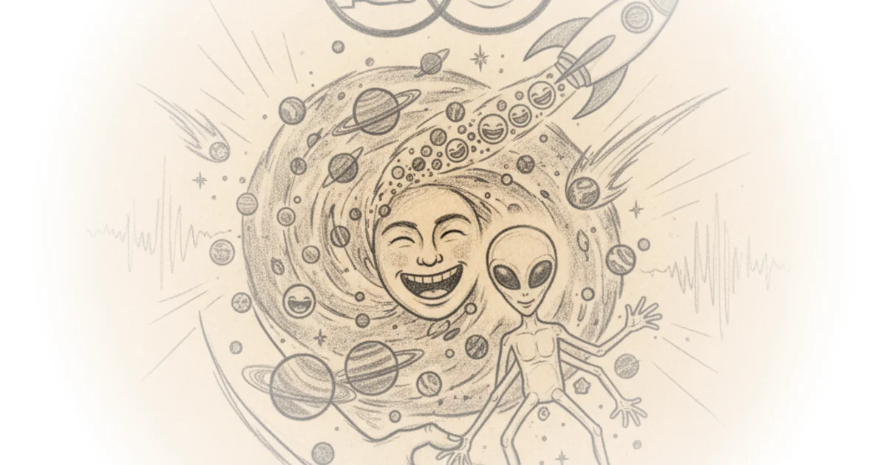

The chevy bolt recall & the EV battery fire problem Asianometry · Asianometry ·Mar 25, 2026 · 13 min read · Science
China’s coming EV battery waste problem Asianometry · Asianometry ·Mar 25, 2026 · 14 min read · Science
Catl's sodium-ion battery: Better than lithium? Asianometry · Asianometry ·Mar 25, 2026 · 12 min read · Science
How asml builds a $150 million euv machine Asianometry · Asianometry ·Mar 25, 2026 · 13 min read · Science
The history of the semiconductor photomask Asianometry · Asianometry ·Mar 25, 2026 · 15 min read · Science
Let’s break down the 45nm process node Asianometry · Asianometry ·Mar 25, 2026 · 40 min read · Science
Thyristors did to power what transistors did to logic Asianometry · Asianometry ·Mar 25, 2026 · 17 min read · Science
Vancomycin: The iconic antibiotic of last resort Asianometry · Asianometry ·Mar 25, 2026 · 17 min read · Science
Electromagnetism secretly runs the world Packy McCormick · Not Boring ·Mar 24, 2026 · 61 min read · Science
"Project hail mary" movie: $80 million domestic launch weekend, $140 million worldwide Brad DeLong · DeLong's Grasping Reality ·Mar 23, 2026 · 11 min read · Science 
Import AI 450: China's electronic warfare model; traumatized llms; and a scaling law for cyberattacks Jack Clark · Import AI ·Mar 23, 2026 · 11 min read · Science
Why the speed of light is not an absolute limit Sabine Hossenfelder · Sabine Hossenfelder ·Mar 22, 2026 · 15 min read · Science
Xcel energy's green advocacy backfires, beautifully Various · Energy Bad Boys ·Mar 21, 2026 · 11 min read · Science
Terence tao – how the world’s top mathematician uses AI Dwarkesh Patel · Dwarkesh Patel ·Mar 20, 2026 · 84 min read · Science
125: 13 things to know about fertility, according to doctors who help people grow their families Various · Two Truths ·Mar 19, 2026 · 14 min read · Science
Making a giant zipper to explain how it works Derek Muller · Veritasium ·Mar 19, 2026 · 19 min read · Science
Martian soil is deadly, and that's why it might support life Matt O'Dowd · PBS Space Time ·Mar 19, 2026 · 15 min read · Science